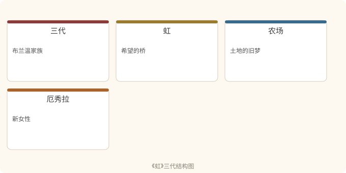

虹
一、基本信息
| 作者 | 劳伦斯 |
|---|---|
| 成书/出版 | 1915年（作者页 B125 口径：虹（1915）） D.H. Lawrence — Encyclopaedia Britannica（百科全书） |
| 国别/地区 | 英国 |
| 时代 | 现当代 · 20世纪 |
| 体裁 | 长篇小说 |
| 语言 | 英语 |

《虹》三代结构图（主题·结构图）
二、创作背景
作者页（B125）：劳伦斯 major_works 载'虹（1915）、恋爱中的女人（1920）'（B125 作者页定位，详见 erzisonai 条核对）。
题材（通说待核）：布兰温家族三代——从农场到城市的精神之'虹'。
三、内容脉络
三代女性：莉迪亚→安娜→厄秀拉——婚姻与自我的演进（通说待核）。
四、主要人物表
| 人物 | 身份 | 说明 |
|---|---|---|
| 厄秀拉 | 第三代 | 新女性的探索（通说待核） |
五、主题与艺术特点
- 三代人的性灵演进（通说）。
- 工业文明与土地（通说待核）。
- '虹'的希望之桥（书名通说待核）。
六、影响与评论
- 作者页：劳伦斯代表作（B125 作者页口径）。
D.H. Lawrence — Encyclopaedia Britannica（百科全书） - 1915年遭禁（禁书史——通说待核）。
D.H. Lawrence — Encyclopaedia Britannica（百科全书）
七、阅读建议
难点
- 家族三代结构。
- 劳伦斯式重复语汇。
- 《虹》（人民文学出版社，通说待核）。
- 英文原版（公有领域渐近）。
先《儿子与情人》→《虹》→《恋爱中的女人》。
八、待核实
- 1915年出版（Methuen说）与禁售核对。
- 厄秀拉人名核对。
- 遭禁原因（反战言论说）待核。
本页主要来源
劳伦斯的其他收录作品：儿子与情人